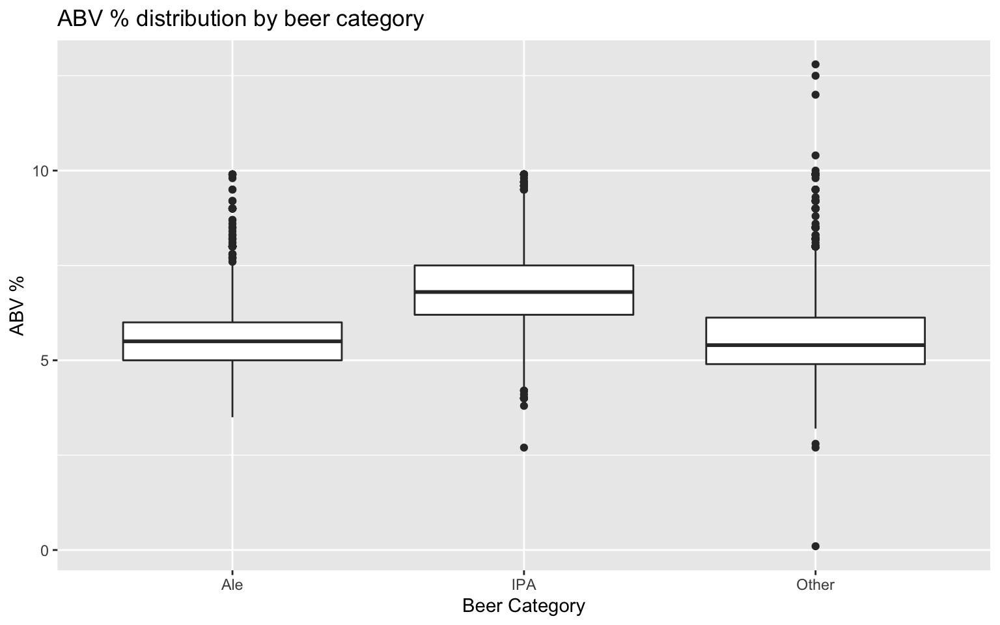

Case Study 1
Sanjay Pillay & Angelo Bravo
10/9/2019
Importing Libraries
#uncomment below installpks command if running for the first time
#install.packages("dplyr", "naniar","mice","VIM","stringi","stringr"."rvest","purrr","tidyverse","tidyr","ggthemes","plotly","ggplot2","reshape2","GGally","caret","class")
library(dplyr) #join etc
library(naniar) # check nulls
library(mice) # imputing
library(VIM) # view imputed datas
library(stringi)
library(stringr)
library(rvest) #html_table, html_node
library(purrr)
library(tidyverse) # Data cleaning
library(tidyr) # Data cleaning
library(ggthemes) #Plotting
library(plotly) #Plotting
library(ggplot2) #Plotting
library(reshape2) # melt
library(GGally) # ggpairs
library(caret) #Confution matrix
library(class)
library(caret)
library(e1071)Importing data and filling in missing data with mice package
#Read supplied data
cdw = getwd()
brewwriesData = read.csv(paste(getwd(),"/data/","Breweries.csv", sep = ""),header = TRUE)
beerData = read.csv(paste(getwd(),"/data/","Beers.csv", sep = ""),header = TRUE)
#Analyse the data
gg_miss_var(beerData)# about 58.3% of data are not missing any values
# 40% of IBU and 2.6% of ABV are misisng values
#Plot the missing value using mice package
aggr_plot <- aggr(beerData, col=c('navyblue','red'), numbers=TRUE, sortVars=TRUE, labels=names(beerData), cex.axis=.7, gap=3, ylab=c("Histogram of missing data","Pattern"))##
## Variables sorted by number of missings:
## Variable Count
## IBU 0.41701245
## ABV 0.02572614
## Name 0.00000000
## Beer_ID 0.00000000
## Brewery_id 0.00000000
## Style 0.00000000
## Ounces 0.00000000# left box plot to distribution of AVB with and without misisng IBU ,Right shows there are no IBU observations where ABV is missing
marginplot(beerData[c('IBU','ABV')])#Summary data
summary(brewwriesData)## Brew_ID Name City
## Min. : 1.0 Blackrocks Brewery : 2 Portland: 17
## 1st Qu.:140.2 Blue Mountain Brewery : 2 Boulder : 9
## Median :279.5 Lucette Brewing Company: 2 Chicago : 9
## Mean :279.5 Oskar Blues Brewery : 2 Seattle : 9
## 3rd Qu.:418.8 Otter Creek Brewing : 2 Austin : 8
## Max. :558.0 Sly Fox Brewing Company: 2 Denver : 8
## (Other) :546 (Other) :498
## State
## CO : 47
## CA : 39
## MI : 32
## OR : 29
## TX : 28
## PA : 25
## (Other):358summary(beerData)## Name Beer_ID ABV
## Nonstop Hef Hop : 12 Min. : 1.0 Min. :0.00100
## Dale's Pale Ale : 6 1st Qu.: 808.2 1st Qu.:0.05000
## Oktoberfest : 6 Median :1453.5 Median :0.05600
## Longboard Island Lager: 4 Mean :1431.1 Mean :0.05977
## 1327 Pod's ESB : 3 3rd Qu.:2075.8 3rd Qu.:0.06700
## Boston Lager : 3 Max. :2692.0 Max. :0.12800
## (Other) :2376 NA's :62
## IBU Brewery_id Style
## Min. : 4.00 Min. : 1.0 American IPA : 424
## 1st Qu.: 21.00 1st Qu.: 94.0 American Pale Ale (APA) : 245
## Median : 35.00 Median :206.0 American Amber / Red Ale : 133
## Mean : 42.71 Mean :232.7 American Blonde Ale : 108
## 3rd Qu.: 64.00 3rd Qu.:367.0 American Double / Imperial IPA: 105
## Max. :138.00 Max. :558.0 American Pale Wheat Ale : 97
## NA's :1005 (Other) :1298
## Ounces
## Min. : 8.40
## 1st Qu.:12.00
## Median :12.00
## Mean :13.59
## 3rd Qu.:16.00
## Max. :32.00
## # Deal with missing values
# We will get all missing vars to build the predictorMatrix to be passed to mice
missVars <- names(beerData)[colSums(is.na(beerData)) > 0]
#Get all the variables names in the dataset
allVars <- names(beerData)
#Code borrwoed from https://rpubs.com/kaz_yos/mice-exclude
#Initialize the matrix witl all row column having th evar names form above
predictorMatrix <- matrix(0, ncol = length(allVars), nrow = length(allVars))
rownames(predictorMatrix) <- allVars
colnames(predictorMatrix) <- allVars
#List the variables we want to be used for the calculations
imputerVars <- c("ABV","IBU","Style")
## Keep variables that actually exist in dataset
imputerVars <- intersect(unique(imputerVars), allVars)
imputerMatrix <- predictorMatrix
imputerMatrix[,imputerVars] <- 1
#Specify variables to be imputed
imputedOnlyVars <- c("ABV","IBU")
imputedVars <- intersect(unique(c(imputedOnlyVars, imputerVars)), missVars)
imputedMatrix <- predictorMatrix
imputedMatrix[imputedVars,] <- 1
predictorMatrix <- imputerMatrix * imputedMatrix
## Diagonals must be zeros (a variable cannot impute itself)
diag(predictorMatrix) <- 0
#Matrix to feed mice call
predictorMatrix## Name Beer_ID ABV IBU Brewery_id Style Ounces
## Name 0 0 0 0 0 0 0
## Beer_ID 0 0 0 0 0 0 0
## ABV 0 0 0 1 0 1 0
## IBU 0 0 1 0 0 1 0
## Brewery_id 0 0 0 0 0 0 0
## Style 0 0 0 0 0 0 0
## Ounces 0 0 0 0 0 0 0#Generate 5 sets using 50 iterations using pnm (Predictive mean matching) method
#imputedBeer = mice(beerData,m=5,maxit=50,meth='pmm',seed=500, predictorMatrix = predictorMatrix)Visualizng Imputed Dataset
#mice density polt
densityplot(imputedBeer,IBU~ABV|.imp)
completedData = mice::complete(imputedBeer,1)
xyplot(imputedBeer,ABV ~ IBU)xyplot(beerData$ABV ~ beerData$IBU,data =beerData)###1 How many Brueries in each state
brewwriesData %>% count(State)## # A tibble: 51 x 2
## State n
## <fct> <int>
## 1 " AK" 7
## 2 " AL" 3
## 3 " AR" 2
## 4 " AZ" 11
## 5 " CA" 39
## 6 " CO" 47
## 7 " CT" 8
## 8 " DC" 1
## 9 " DE" 2
## 10 " FL" 15
## # … with 41 more rowsbeerBrewries = merge(completedData, brewwriesData, by.x = "Brewery_id", by.y = "Brew_ID")
head(beerBrewries,6)## Brewery_id Name.x Beer_ID ABV IBU
## 1 1 Get Together 2692 0.045 50
## 2 1 Maggie's Leap 2691 0.049 26
## 3 1 Wall's End 2690 0.048 19
## 4 1 Pumpion 2689 0.060 38
## 5 1 Stronghold 2688 0.060 25
## 6 1 Parapet ESB 2687 0.056 47
## Style Ounces Name.y
## 1 American IPA 16 NorthGate Brewing
## 2 Milk / Sweet Stout 16 NorthGate Brewing
## 3 English Brown Ale 16 NorthGate Brewing
## 4 Pumpkin Ale 16 NorthGate Brewing
## 5 American Porter 16 NorthGate Brewing
## 6 Extra Special / Strong Bitter (ESB) 16 NorthGate Brewing
## City State
## 1 Minneapolis MN
## 2 Minneapolis MN
## 3 Minneapolis MN
## 4 Minneapolis MN
## 5 Minneapolis MN
## 6 Minneapolis MNtail(beerBrewries,6)## Brewery_id Name.x Beer_ID ABV IBU
## 2405 556 Pilsner Ukiah 98 0.055 35
## 2406 557 Heinnieweisse Weissebier 52 0.049 9
## 2407 557 Snapperhead IPA 51 0.068 80
## 2408 557 Moo Thunder Stout 50 0.049 15
## 2409 557 Porkslap Pale Ale 49 0.043 42
## 2410 558 Urban Wilderness Pale Ale 30 0.049 42
## Style Ounces Name.y
## 2405 German Pilsener 12 Ukiah Brewing Company
## 2406 Hefeweizen 12 Butternuts Beer and Ale
## 2407 American IPA 12 Butternuts Beer and Ale
## 2408 Milk / Sweet Stout 12 Butternuts Beer and Ale
## 2409 American Pale Ale (APA) 12 Butternuts Beer and Ale
## 2410 English Pale Ale 12 Sleeping Lady Brewing Company
## City State
## 2405 Ukiah CA
## 2406 Garrattsville NY
## 2407 Garrattsville NY
## 2408 Garrattsville NY
## 2409 Garrattsville NY
## 2410 Anchorage AK## Media Alcohol/Bitterness for each state
abByState = beerBrewries %>% group_by(State) %>% summarize(medianIBU = median(IBU), medianABV = median(ABV))
abByState = abByState %>% mutate(Bitterness = 'Middle')
abByState[which.max(abByState$medianIBU),]$Bitterness = "Max"
abByState[which.min(abByState$medianIBU),]$Bitterness = "Min"
abByState = abByState %>% mutate(Alcohol = 'Middle')
abByState[which.max(abByState$medianABV),]$Alcohol = "Max"
abByState[which.min(abByState$medianABV),]$Alcohol = "Min"
#Comparision bar chart per state
p =ggplot(abByState,aes(x = State,y = medianIBU)) +
geom_bar(aes(fill = Bitterness),stat = "identity") +
labs(title="Median bitterness by state", y = "IBU", x="State" ) + theme(axis.text.x = element_text(angle = 90, hjust = 1))
p + theme(legend.position = "top")
p =ggplot(abByState,aes(x = State,y = medianABV*100)) +
geom_bar(aes(fill = Alcohol),stat = "identity") +
labs(title="Median alcohol % content by state", y = "ABV %", x="State" ) + theme(axis.text.x = element_text(angle = 90, hjust = 1))
p + theme(legend.position = "top")#Identify beer Categories by IPA//Ale/Other
beerBrewries = beerBrewries %>% mutate(bClass = 'Other')
beerBrewries = beerBrewries %>% mutate(ABVpercent = ABV*100)
beerBrewries[grepl('IPA',beerBrewries$Style, ignore.case = TRUE),]$bClass = "IPA"
beerBrewries[grepl('Ale',beerBrewries$Style, ignore.case = TRUE),]$bClass = "Ale"
beerBrewries = beerBrewries %>% mutate(bClass = as.factor(bClass))
###6 ABV statistics
summary(beerBrewries$ABVpercent)## Min. 1st Qu. Median Mean 3rd Qu. Max.
## 0.100 5.000 5.600 5.977 6.700 12.800beerBrewries %>% ggplot(aes(x = bClass, y = ABVpercent)) + geom_boxplot() + labs(title="ABV % distribution by beer category", y = "ABV %", x="Beer Category" ) 
beerBrewries %>%
ggplot(aes(x = log(ABVpercent), color = bClass)) + geom_histogram() + facet_grid(rows = vars(bClass))+ labs(title="ABV % distribution by beer category", y = "Count", x="% ABV" ) +theme_classic()## `stat_bin()` using `bins = 30`. Pick better value with `binwidth`.###7 relation between ABV and IBU
beerBrewries %>% ggplot(aes(x = IBU, y = ABV)) + geom_point(aes(colour = bClass)) + labs(title="Relation of ABV vs IBU after including missing data", y = "ABV", x="IBU" ) beerBrewries %>% select( IBU, ABVpercent,bClass) %>% ggpairs(aes(color = bClass))## `stat_bin()` using `bins = 30`. Pick better value with `binwidth`.
## `stat_bin()` using `bins = 30`. Pick better value with `binwidth`.Preparing dataset for KNN Creating IPA/Ale only dataframe
#### Q 8 & 9
#Set up data for Training and test set 50/50
ipa_ale_df <- beerBrewries %>% filter(bClass %in% c("IPA", "Ale"))
ipa_df <- beerBrewries %>% filter(bClass %in% c("IPA"))
ale_df <- beerBrewries %>% filter(bClass %in% c("Ale"))
ipa_ale_df$bClass <- droplevels(ipa_ale_df$bClass)
ipa_ale_df$bClass <- factor(ipa_ale_df$bClass, levels = c("IPA", "Ale"))
levels(ipa_ale_df$bClass)## [1] "IPA" "Ale"#removing ale,other levels
ipa_df$bClass <- droplevels(ipa_df$bClass)
#adding ale level to ipa_df
ipa_df$bClass <- factor(ipa_df$bClass, levels = c(levels(ipa_df$bClass), "Ale"))
#same process to ale_df
ale_df$bClass <- droplevels(ale_df$bClass)
#adding ale level to ipa_df
ale_df$bClass <- factor(ale_df$bClass, levels = c(levels(ale_df$bClass), "IPA"))Fitting 100 models for 100 Ks and getting the mean accuracy for each K We are trying to show that ABV and IBU is significantly different for IPAs and Ales by showing you can get more than 50% accuracy on a 50/50 split training set of IPAs and Ales.
#IPA,ALE VS IPA,ALE (50/50 split)
set.seed(100)
n = 1
accuracydf <- data.frame(accuracy = numeric(10000), k = numeric(10000),
sensitivity = numeric(10000), specificity = numeric(10000))
for(i in 1:100) {
#Get dataset with evenly distributed IPAs and Ales (50/50)
ipa_test_ind <- sample(1:nrow(ipa_df), nrow(ipa_df)-250)
ale_df_ind <- sample(1:nrow(ale_df), 250)
#building train set
ipa_ale_train <- rbind(ipa_df[-ipa_test_ind,], ale_df[ale_df_ind,])
ipa_ale_overall_test <- ipa_ale_df[sapply(ipa_ale_df$Name.x, function(x) x %in% ipa_ale_train$Name.x) == FALSE,]
ipa_ale_test_ind <- sample(1:nrow(ipa_ale_overall_test), round(.2 * nrow(ipa_ale_train)))
ipa_ale_test <- ipa_ale_overall_test[ipa_ale_test_ind,]
#storing accuracy data in data frame
for(j in 1:100) {
classifications <- knn(ipa_ale_train[c("ABV", "IBU")], ipa_ale_test[c("ABV", "IBU")], cl = ipa_ale_train$bClass, k = j, prob = F)
CM = confusionMatrix(table(classifications, ipa_ale_test$bClass))
accuracydf$accuracy[n] = CM$overall[1]
accuracydf$sensitivity[n] = CM$byClass["Sensitivity"]
accuracydf$specificity[n] = CM$byClass["Specificity"]
accuracydf$k[n] = j
n = n + 1
}
}
max(accuracydf$accuracy, na.rm = TRUE)## [1] 0.94#accuracydf[accuracydf$accuracy == 0.91,]
summary_acc_df <- accuracydf %>% group_by(k) %>% summarise(mean_accuracy = mean(accuracy),
mean_sensitivity = mean(sensitivity),
mean_specificity = mean(specificity, na.rm = T))
overall_mean_accuracy <- summary_acc_df[which.max(summary_acc_df$mean_accuracy),]
#overall_mean_accuracy
acc_df <- as.data.frame(summary_acc_df)
accuracydf %>% ggplot(aes(x=k, y = accuracy)) + geom_point() + geom_smooth()## `geom_smooth()` using method = 'gam' and formula 'y ~ s(x, bs = "cs")'str(acc_df)## 'data.frame': 100 obs. of 4 variables:
## $ k : num 1 2 3 4 5 6 7 8 9 10 ...
## $ mean_accuracy : num 0.837 0.836 0.849 0.851 0.857 ...
## $ mean_sensitivity: num 0.856 0.85 0.851 0.854 0.857 ...
## $ mean_specificity: num 0.829 0.83 0.847 0.85 0.857 ...library(ggthemes)
acc_df %>% ggplot(aes(x = k, y = mean_accuracy)) + geom_point() + geom_smooth() + theme_economist() +
ggtitle("Mean Accuracy For 100 Iterations vs. K") + xlab("K") + ylab("Mean Accuracy")## `geom_smooth()` using method = 'loess' and formula 'y ~ x'We will now get ABV confidence intervals for IPAs and Ales
#run t-test two test if our overall_mean_accuracy is greater than 50
#t.test
#t.test(ipa_ale_df$ABV[ipa_ale_df$bClass=="IPA",], ipa_ale_df)
plot(density(ipa_ale_df$ABV[ipa_ale_df$bClass=="IPA"]))hist(ipa_ale_df$ABV[ipa_ale_df$bClass=="IPA"], col=rgb(1,0,0,0.5), xlim = range(.01,.15), main="Ale and IPA ABV Histogram",
xlab = "ABV", ylab = "Count")
hist(ipa_ale_df$ABV[ipa_ale_df$bClass=="Ale"], col=rgb(0,0,1,0.5), add=T)#run a two-sample to test if the groups have significantly different ABVs
t.test(ipa_ale_df$ABV[ipa_ale_df$bClass=="IPA"], ipa_ale_df$ABV[ipa_ale_df$bClass=="Ale"])##
## Welch Two Sample t-test
##
## data: ipa_ale_df$ABV[ipa_ale_df$bClass == "IPA"] and ipa_ale_df$ABV[ipa_ale_df$bClass == "Ale"]
## t = 19.467, df = 1040.3, p-value < 2.2e-16
## alternative hypothesis: true difference in means is not equal to 0
## 95 percent confidence interval:
## 0.01106448 0.01354505
## sample estimates:
## mean of x mean of y
## 0.06899104 0.05668627t.test(ipa_ale_df$IBU[ipa_ale_df$bClass=="IPA"], ipa_ale_df$IBU[ipa_ale_df$bClass=="Ale"])##
## Welch Two Sample t-test
##
## data: ipa_ale_df$IBU[ipa_ale_df$bClass == "IPA"] and ipa_ale_df$IBU[ipa_ale_df$bClass == "Ale"]
## t = 39.44, df = 1073.6, p-value < 2.2e-16
## alternative hypothesis: true difference in means is not equal to 0
## 95 percent confidence interval:
## 36.43548 40.25067
## sample estimates:
## mean of x mean of y
## 71.68817 33.34510#run a ttest on each group in order to determine a 95% CI of abv for each group
t.test(ipa_ale_df$ABV[ipa_ale_df$bClass=="IPA"])##
## One Sample t-test
##
## data: ipa_ale_df$ABV[ipa_ale_df$bClass == "IPA"]
## t = 130.79, df = 557, p-value < 2.2e-16
## alternative hypothesis: true mean is not equal to 0
## 95 percent confidence interval:
## 0.06795492 0.07002716
## sample estimates:
## mean of x
## 0.06899104t.test(ipa_ale_df$ABV[ipa_ale_df$bClass=="Ale"])##
## One Sample t-test
##
## data: ipa_ale_df$ABV[ipa_ale_df$bClass == "Ale"]
## t = 162.78, df = 1019, p-value < 2.2e-16
## alternative hypothesis: true mean is not equal to 0
## 95 percent confidence interval:
## 0.05600293 0.05736962
## sample estimates:
## mean of x
## 0.05668627